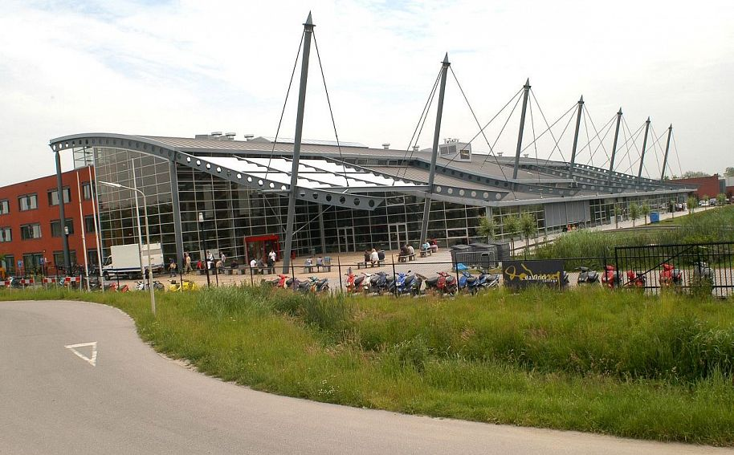

Ik zit op het Da Vinci College in Gorinchem. Ik doe de opleiding Applicatie Ontwikkeling, omdat ik vroeger een droom had om werk met mijn computer en ik vond hoe dat mensen websites maakten altijd al een interresant onderwerp.
Ik zat altijd achter mijn computer en filmpjes te kijken over html. Ik vond het altijd al leuk om te gaan programmeren. Ik blijf gemotiveerd door altijd door te programmeren zelfs doe ik dat thuis na school.
Zo ziet de school eruit. Ik heb het hier ook zeker naar mijn zin. Ik heb hier nu ook genoeg vrienden. Ik wil mijn programmeerpunten veel beter maken.
Ik heb veel natuurkunde gehad over de ontwikkeling van technische apparaten Ik heb eigenlijk nog nooit een bijbaan gehad, dus die vraag kan ik helaas niet beantwoorden.